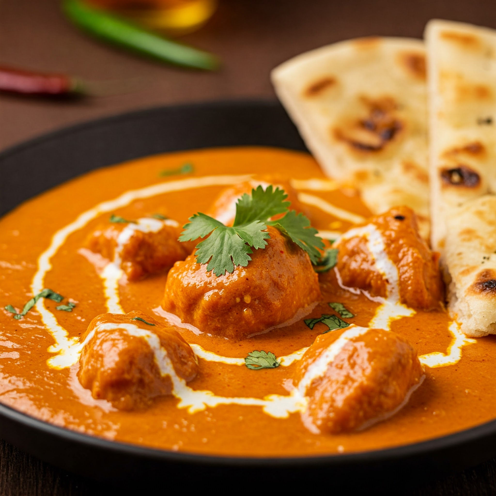

Butter Chicken Recepie
Home

Butter Chicken
Butter chicken is a popular Indian dish featuring tender chicken simmered in a rich, creamy tomato-based sauce, infused with aromatic spices. It's known for its velvety texture and balanced flavors, often served with rice or naan bread. A comforting and flavorful culinary experience.
Ingredients
- 1.5 lbs boneless, skinless chicken breasts, cut into 1-inch cubes
- 1 cup plain yogurt
- 2 tablespoons lemon juice
- 1 teaspoon salt
- 1 teaspoon garam masala
- 1/2 teaspoon turmeric powder
- 1/2 teaspoon chili powder
- 1/4 teaspoon ground cumin
- 1/4 teaspoon ground coriander
- 4 tablespoons butter
- 1 large onion, finely chopped
- 2 cloves garlic, minced
- 1 inch ginger, grated
- 1 (15 oz) can crushed tomatoes
- 1/2 cup heavy cream
- 1/4 cup chopped cilantro, for garnish
Instructions
- Marinate the Chicken: In a large bowl, combine the chicken with yogurt, lemon juice, salt, garam masala, turmeric powder, chili powder, cumin, and coriander. Mix well and marinate for at least 30 minutes, or preferably overnight.
- Cook the Chicken: Heat 2 tablespoons of butter in a large skillet or pot over medium-high heat. Add the marinated chicken and cook until browned on all sides and cooked through. Remove the chicken from the skillet and set aside.
- Sauté the Aromatics: In the same skillet, melt the remaining 2 tablespoons of butter. Add the chopped onion and sauté until golden brown. Add the minced garlic and grated ginger and cook for another minute until fragrant.
- Add Tomatoes and Simmer: Stir in the crushed tomatoes and bring to a simmer. Reduce the heat to low, cover the skillet, and simmer for 15 minutes, stirring occasionally.
- Add Cream and Chicken: Stir in the heavy cream and cook for another 5 minutes, stirring occasionally. Add the cooked chicken back to the skillet and mix well.
- Garnish and Serve: Garnish with chopped cilantro and serve hot with rice or naan bread.